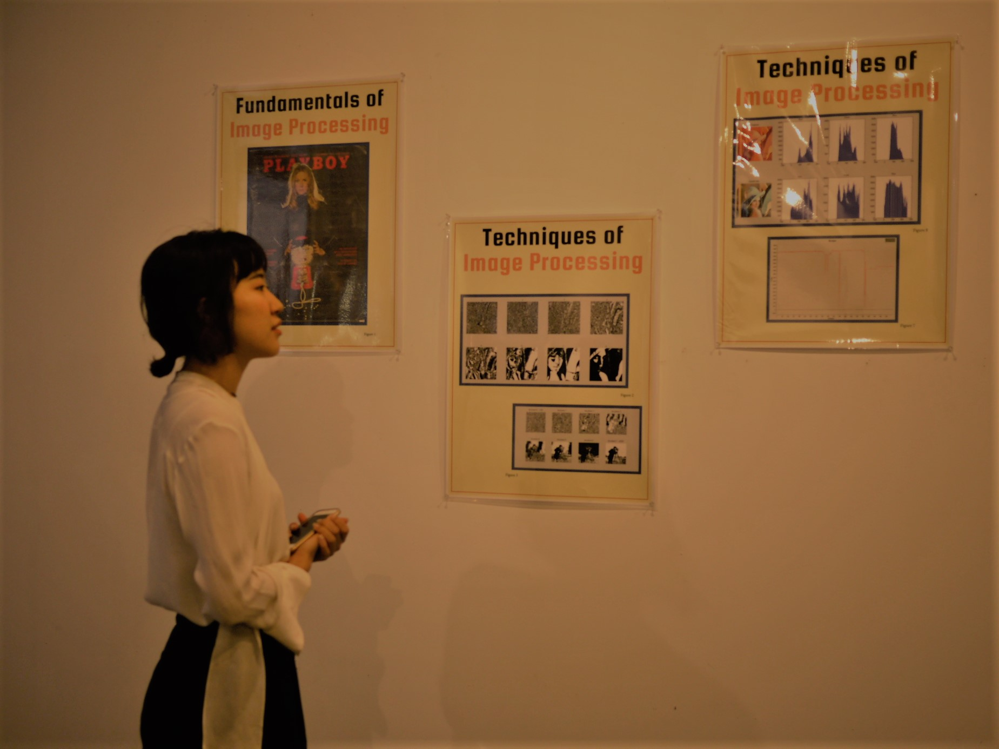

A collaborative art show between twelve pairs of art and science students from the Brown and RISD undergraduate, graduate and post-graduate program happened in full force on May the 12th at the Fri-Ends Collective gallery. Hundreds of visitors occupied the space and engaged in conversation. An excitement for the future of art and science filled the air.
This event was sponsored by RISD STEAM and organized by Eric Metcalf (Brown PhD ‘21), Matthew Piper (RISD ’20), Kay Liang (RISD ’19) and Lisa Su (RISD ’18). Special Thanks to Lee Pivnik and Jake Sillen, the Nature Lab, and Kathryn Russo.
Planning
It began with frequent meetings over cups of coffee at Carr Haus cubicles and free cake left at the Center of Student Involvement meeting room. We were united by our common passion to bridge the gap between art and science and provide students with the opportunity to burst the bubble of their major. Despite the lack of time before finals, unbooked gallery spaces and confidence in reaching a diverse group of students who were interested in our project, we persisted against the odds because we believed that even sparking a simple conversation between two people of different disciplines, regardless of whether they produced a masterpiece, would be worthwhile. So, we put out flyers, sent out application forms, and most importantly had conversations with prospective artists. We did not expect to receive the overwhelming amount of passionate responses that we did.
All the inspiring and talented individuals who applied gave us the drive to bring the show to fruition.
Meeting
Two weeks after introducing the selected RISD undergraduate and graduate students to their Brown PhD student counterparts, we held a midway meeting for all the pairs to share their progress with the rest of the cohort. The two-hour meeting was packed with eloquent presentations, thought-provoking ideas, well-considered solutions and constructive critiques. Leonora Masini and Talia Connelly’s presentation fluidly wove together Leonora’s video explorations of gender stereotypes in Italy with Talia’s research on textiles as a gendered medium. Yeon Soo Joo and Morgan Turner’s hilarious anecdote about their first meetup at a cafe when they both realized their uncannily similar passion for motion confirmed that they were the perfect match.
Opening
The opening had already begun but only the organizers and a few artists could be seen pacing the space, setting up tables and finalizing installations. Matteo Ludice and Alexis Caruso’s 126 subtle but unmissable pins were waiting patiently on the wall for visitors to place their completed square and cream-papered surveys. Brooke Osborne and Hannim Song’s dark maple table that transitioned into tree branches at its legs made an elegant statement at the center of the room. Visitors started swarming in, grabbing a leaflet at the door before scanning Lauren Bange and Reilly Blum’s provocative posters that mocked the objectification of women in standard image processing textbooks. Leah Rosenbloom and Adrian Pulido’s bold sculptural armor piece stood gracefully to the right with shards of pink and clear swords scattered beneath.
Seven representatives of the twelve pairs were then gathered in a panel to reflect on their process and provide valuable insight on the future of art and science.

Discovering
This show connected differences in different ways. It enabled collaboration and reaffirmed its value. The overall participation and final pieces that were generated far exceeded our expectations. As we look to the future, we see the immense potential in combining art education with post-graduate education and hope to expand this collaboration next year. We plan to run the show again with more participants, time and impact. We had a lot of fun and are excited to continue discovering.

To preface: I study painting.
I’m giving this small byte of background information as I’m using an editorial voice that can’t pretend to be an authority on much of anything, especially thermodynamics, and my conscience holds me to a certain standard, truth-wise.
I have a narrative theory that needs a scientific test: the technology of coincidences on a formal level, the speed of bullshit, the uses of story-telling. I have a scientific question that requires a bit of narration to pull together. So, the operation handshakes quite nicely.
The first time I encountered a solar panel in a real, pondering way was late last October. Jeff and I had gone on a long drive down North Main, querying about some Craigslist junk, picking up old tires and stuff. Before finding the panel in question, we had stopped at a Drive-through Dunkin Donuts (DDD) to power up. Jeff ordered a hot coffee, and I ordered an iced one—I guess there was some interpretational indecision about the velocity of Winter’s approach.
At the DDD, the coffee-matter does not matter. It exists only as its quality, size, and condition—my iced coffee became, in the transaction, simply an “ICED,” and Jeff’s small, hot coffee became a “SMALL HOT.” Someone had made a mistake with the computer, and an extra “small hot” was prepared for our order. Holding both heat frequencies on the drive through Pawtucket, I had an idea for a hot new coffee flavor, “WARM.” It would speak the weird frequency-spanning language of something losing heat—maybe a bit like a lizard’s cold-blooded and flickering tongue.
Artists do not think much about temperature. In fact, the temperature-factor is figured around the art-object. In glass and wood boxes, in storage, etc., it’s all plotted (boringly) to “stay still.”
The solar panel was westward-facing in a strung-out cul-de-sac, just past a junkyard of smooshed plastic cars. After keeping an eye on their proliferation for what has now been a little while, it feels like solar panels are cemented on every available surface. What made this one noticeable beyond ubiquity was its specialized hardiness and its temperamental, hobby-like craft—it wasn’t on a roof, first thing, instead, the tenant had constructed this sort of A-frame support for the panel itself, and a lower-down, V-shaped nest for its battery and wiring.
A solar panel user can choose how deep in the grid they stick themselves. On the drive back, I was bouncing with the seven coffees in my palms, and Jeff and I began wondering what it would take to really go solo. I mean, to skip the obvious ways of divesting oneself of a conglomerate electromagnetic overseer—like not using power in the first place, or scrounging around for solar subsidies and rebates—and kicking the Resistance up some major notches. This would mean working out a way of living in the (power-generating) moment—but a moment that’s “done-oneself.” Resistance unreliant on rhetoric—beyond crude individualism.
“Load defection” is the term power companies use for a solar user stockpiling personal power instead of reinvesting excess energy in the grid.
I heard in my Contemporary Art class the other day that after WWII, art was identified as the last and only hand-made thing following the mecha-industrial wave-crash.
Handmade, personal power: painters and off-the-gridders both churn through a cultural-DIY lifestyle.
It is a slippery slope from good-hearted sustainable individualism to hosting a sick [solar] power complex.
After seeing the first solar panel, I decided to make one. This did not feel like such a whack-job idea, because there is good precedent. Solar panels are light-filled, power-generating panels. A good percentage of each Rembrandt painting is about light—as Craig Taylor says, “the symbolic use of light was Rembrandt’s deal”. A good percentage of Rembrandt’s paintings, also, are on panel.
The thing is, solar panels look like “the grid,” so endeavoring to be “off of it” is a bit of a linguistic inaccuracy—or, a joke. In the 21st century, some paintings are all punch-line, but good paintings can avoid pulling fast ones. I think a slow formal query can override immediate impulse, and luckily, here, they seemed already to have it all. The flatness, the strange reflectivity, the fractured, opulent blue. In terms of the object’s construction, I started to think of the solar panel painting as an Agnes Martin-Jasper Johns supercombine.
The truth of the matter, that the solar panel painting would actually be a life-size, wooden, and inoperative solar panel, was a slow joke that revealed itself as sustainable as I worked through the problem.
Some paintings I like are generative. There’s a grade-school kind of interactivity about them, plus, a real heat. In Alfred Jensen’s work, for example, the paintings aren’t so much about expression or meaning as much as they are about hammering out a logic, a number-current, that interlocks above the surface to push this fairly specific network that is both giddy and cryptic. Human eyes ricochet about the painting-board-thing as they try to figure something out.
Solar panels are independently generative. The entrance of this independence complicates the role of human eyes, which naturally attempt to resolve a formative back-and-forth with extant objects. The slow-but-steady, cow-like attitude of the solar panel tilts off-balance the usual crux of debate. Interactivity presumes two opposing walls against which to bounce.
What is bouncing around the painting if our eyes are not there?
If a tree falls on the A-frame support in the cul-de-sac, and no one’s…?
With a solar panel, the answer to the first question is brief. Sunlight.
Under light, the flat of the painting becomes a perverse forest, and human eyes attempt to analyze the generational energy of the sun’s watch, the atomic condition of a calculation.
The thing about paintings and solar panels is that you really shouldn’t be handling either of them.
I visited a few solar farms in December, trying to gather some information for my arts and crafts project. The farms are massive—really unlike the household panel groups I would find on walks and looking out car windows. I spent some time online, tracking these things down. Solar farms don’t have names or coordinates most of the time, and nothing was indexed particularly well. I had to chronologically trace news articles that described new farms as being “now,” the largest in the state.
Luckily, the day I went, I was in a good mood. Visiting a solar farm is like visiting a field of cows, where all the cows are either asleep or dead.
Malcolm and I rented a Prius. We visited three farms, some large (2 football fields) and some smaller (1). I took pictures only with a 35mm camera. This turned out to be a good move. At one of the solar complexes, “No Photography” was allowed, but I could not delete photos off my film and the back of the camera is tricky to get open. The guard, I imagined, would have had some mild-to-moderate moral panic about asking me to destroy the entire roll.
Sunlight doesn’t poke holes in things, but what if the resulting abrasion was so incredibly slight that it was not perceivable by tool or instrument?
The security at the largest farm was military-grade. The roads were bare. Bald. Figures in the landscape seemed taller, the center of attention was dense and particular, the great breadth was underused. Our perceptive dominion maintained the sight/site relationship; what held the terrain would otherwise be prone to lapse. Light overtakes heat, as a connective value. As long as there is no precipitation.
Connector-code of the light to the space problem:
The light pokes holes,
Connector–ode. The purpose of which is
to beautify by complicating.
And then, to compile.
Cars may be morphologically grouped into the animal sort they represent or would sit with at the dinner table. Homology has a negligible effect on empathy, until one encounters a cow.
1. Solar panels are arranged like cows on farms.
2. There is a new row of parking meters on Brook Street, and they are implanted directly into the sidewalk. Solar powered, like you might predict. They really get in the way. I say, they stand there and block our path, like people in line. Jeff says, like people, you feed them. I say, also, they photosynthesize.
I did actually make a solar panel painting. To start with, I did a lot of materials research. I didn’t want to make a solar panel with silicon, but, in order to generate, I needed to make some substantial material discoveries. Probably the best one I had was that, if you mix graphite powder with an acrylic base, the paint becomes
A. conductive, and
B. beautiful.
Et cetera. It is still large and in charge, leaning against the wall with an ungainly sloop. I haven’t decided what should happen with it next. I think the solar panel painting is longer term than I imagined. It’s a real image-sculpture now, and I am invested in it. It is OK as a monolith; it is easier to look at this way and could almost be a person. Ideally it would be installed outside. I might run some tests; I am not sure how the presence of actual sunlight will affect its artistic and communicative performance.
In the moment of a communicative performance, one variable—sustainability—generates the envelope. Watching from the car-window, Ma’s Donut in paw, back burning from the glare of Newport’s hard windmills. In transitional spill theory, hot coffee, knocked over, is not hot, but a problem.
Disarming a solar narrative directive could be just a change of clothes, like misreading the temperature outside.
In February 2017, RISD STEAM conducted a mobile programming workshop based on two programming languages of Pure Data and MobMuPlat in RISD’s Sound Lab/Old Library. This workshop was led by RISD STEAM Project Leaders, Felicita Devlin (RISD,2020) and Tracy Go (RISD,2020). While the curriculum was taught by Shawn Greenlee, the department head of RISD’s Experimental and Foundations studies. This allowed students to understand the basics of sound engineering within programming basic phone applications. This was a one time workshop where students with different programming skill levels from RISD and Brown University explored how to utilize these programs to create sound generators utilizing tone. Then to further understand how to utilize features on mobile devices. Including the odometer, the speedometer, and location to produce various sound.
The workshop began to introduce both of the programming languages to create a basic application to produce sound. It begun with understanding the basics of creating the basic language of Pure Data to develop the framework of our mobile applications. After the basics of creating the application’s graphics through MobMuPlat was established. Students were allowed to created their own personalized application of their choice where they utilized knobs that will respond to volume and frequency. Afterwards, they finally launched the applications that became a tone generator.
This allowed students to construct a web of data that functioned with visual graphics to create a interactive sound application of their mobile phone. Each individual student learned the programming building blocks from each of the development programs, following along with the instructions from Shawn Greenlee who would help troubleshoot as well. After, students were finished we then allowed the students to demonstrate the resulted applications which filled the room with various volumes of similar frequencies.
After the creation of the tone generators, the students followed through with Shawn Greenlee to develop another patch that distorts recorded voices. The students understood how to allow the program to receive inputs and with the toggle of the application would produce outputs of distorted recorded sound from mobile devices. In which students would clap or shout into devices and listen to the distorted output that interrupted the classroom.

When the students were comfortable with the building blocks of Pure Data, it was allowed time to experiment with other opportunities to produce sound. Shawn Greenlee shared with code to dabble in other building blocks to create max patches that can adapt with other phone features such as the odometer, accelerator, and location services. This would respond with a series of different pitches and tones.
Students at RISD produced a found interest in sound design, especially the compatibility with mobile devices. Also they were interested in how they can pursue further within creative endeavours at RISD. A Dual Degree Student at RISD/Brown (2020), Jeff Katz stated, “This now allowed me to understand and further explore sound engineering and integrate it with my art at RISD.”
Thank you to Shawn Greenlee from the Experimental & Foundations department for helping with workshop curriculum and helping us book the Sound Lab/Old Library.
For the whole month of April 2017, RISD STEAM conducted a series of workshops developing a Sound Map based on generated data of population and demographic statistics of Providence in RISD’s Sound Lab/Old Library. This workshop was led by RISD STEAM Project Leader, Felicita Devlin (RISD,2020). It was developed with the help of a team of three other students who were members of RISD’s Sound+STEAM. This allowed students to further the understanding of sound generation by processing data with algorithm to discover a medley of sound that can be developed. Every week during the month of April, students with different programming skill levels from RISD to generate an exhibit that depicts the divided demographics of Providence. The students had help with an online algorithmic program and NodeBox to generate this exhibit. We wanted to develop an interdisciplinary plan that integrates sound design and projection design.
The workshop was themed around the prompt of developing a map based on Providence to illustrate a deeper understanding of the city. The team had a discussion around the importance of the wealth divide within Providence. So the focus shifted by focusing on the demographics of the gap of wealth. Especially with analyzing maps based on the correlations between race and ethnicity which separate wage demographics. The workshop began to introduce the programming languages of NodeBox and how to develop the data into graphics. They researched data online that depicted our findings of the majority of the population within Providence receives a less evenly distributed income among national average (with a GNI of 0.517) It begun with understanding the basics of creating the basic language of musicalgorithms.org to help us explore musical composition through data analysis. The team wanted to develop a system of sound that would make sense with the visual argument.
Afterwards they started developing the physical substance of the piece. A focus wanted to make something that divides the space to convey the wage gap. This would demonstrate the separation between wealth and population within the city of providence. It was decided to utilize scrim in order to make the space more immersive for audiences. The groups were divided into the design team for the musical and visual graphics. Also the design team for the space. For three weeks a developed composition was created utilizing sounds produced. It was organized the data into two categories within the total population amount of salary within given under 80k and above 80k. Afterwards the team utilized pitch, duration, and musical scales to produce sounds within the realms of specific instruments such as the piano, harp, and trombone. Then the composition was arranged by ear and developed through the program Audacity, a music program for editing. Later it was processed into 8 channels, to allow the sound to become more of an immersive part of the experience. Then it was finally exhibited, May 4th with a crowd that came through to support.
The issues we faced during the process was getting more students involved with our Sound project and workshop, especially within RISD. It needs to get more support for integrating sound within the arts, especially help from musical students at the school. While also getting support from students within music majors at Brown. In which it can be promoted months in advance to get more people involved.
Thank you to Dylan Costa for helping us with troubleshooting and helping us book the Sound Lab/Old Library.
Pictured from left to right: Alexis Caruso, Piper Matthews, Reilly Blum (RISD ‘20)
Students At both RISD and Brown University STEAM collaborated in April during a 2 day intensive workshop sponsored by the the Brown University and RISD Bio-STEAM focused on using a critical inquiry to observe the natural world and apply observed natural phenomena to devise a sustainable intervention to a real issue of sustainability.
As Anya Parakh, RISD’19 Dan Mangano RISD ’21 Harold Bracey ,Brown ’19 and Raina Zhang Brown ’19 planned the two day workshop it was intended to be open for anyone interested in the concepts of design, sustainability sciences and biology, As participants began the check in process, students from across college hill pursuing a range of studies from textiles, industrial design, Apparel, computer science, economics, interior architecture, and more, found themselves in RISD’s Nature Lab.
Neil Overstrom, the Director of the the nature Lab at RISD, explained why the nature lab would be the perfect place to start their search.
“There is such a wealth of information here in the nature lab I could spend hours speaking about just how to find all of the specimens in here but I encourage you do do that on your own” said Overstrom. after a brief introduction to bio-mimicry itself students searched the Nature Lab to examine specimens and observe possibilities within each. The team then regrouped into smaller discussions led by Anya, Raina, Harold and Dan focused on how bio-mimicry can or is being applied in the world right now.
The workshop continued at the Brown Design Workshop with plenty of room to create, enough materials ,and latest making technology, possibilities were limitless. Ending the first day, entrepreneurial students pitched their ideas for bio-mimetic sustainable projects attracting members to individual teams. After a day and a half of ideating, drafting, sketching out new ideas, planning new out comes, computer rendering, 3d printing, laser cutting and physical modeling each group presented their biomimetic interventions.
Dessery Dai RISD ’20 and Riya Kessari RISD ’20 who both were inspired by the ability of beetles to absorb and retain water in arid environments prototyped a structure that could be retrofitted onto buildings in dense urban areas. Its structure functioning congruent to the specialized membranes of beetles is able to absorb water for use within a building and filter pollutants from the air.
Another group which observed the complex locomotion of snakes aimed to tackle a form of “rail-less” public transit cars able to move by interacting and creating friction with the ground.
Emilia Mann BRDD ’21 was inspired by the structure of the bromeliad plant which funnels water into a coned structure down to its roots. Emilia worked in a team to model a net structure that can be fitted along the sides of pre-existing buildings in an urban setting like Riya’s and Dessery’s to collect water.
As the workshop ended, it was clear ,the foundational ideas of STEAM, people coming together across disciplines to innovate on an existing idea is the only way these out comes could have been produced.